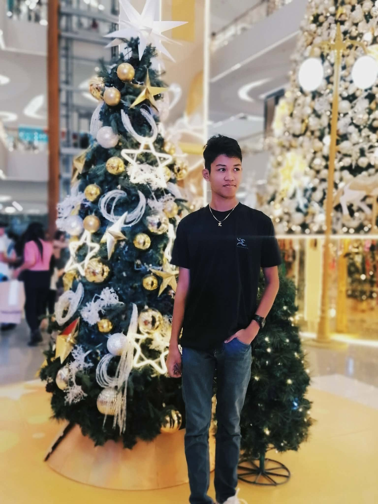

A
Cebu Institute of Technology - University
Grade 12, STEM
digital portfolio / 2026
A curious mind exploring how science and technology can make everyday life more thoughtful, sustainable, and possible.

02 / about
I’m a student who likes asking better questions. I’m drawn to the space where careful research meets useful action, and I’m always looking for the next idea worth testing.
Engineering
Curiosity with purpose
03 / journey
Grade 12, STEM
I want to understand how systems work and design practical solutions to real-world problems.
04 / highlights
05 / chosen research
The study aims to develop and evaluate a sustainable acoustic wall panel made from kapok and abaca fibers as a potential solution for reducing unwanted noise in indoor spaces.
06 / digital projects
Paste project links below
to build your own collection.
keep exploring
The best work starts with a question.
Back to top ↑